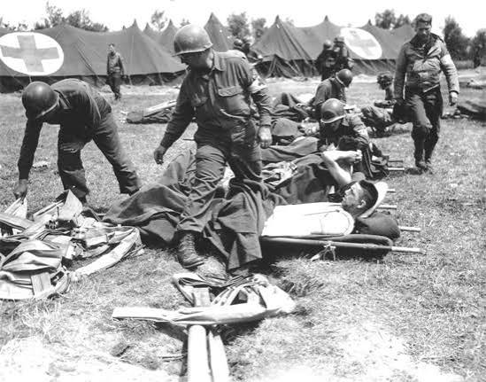
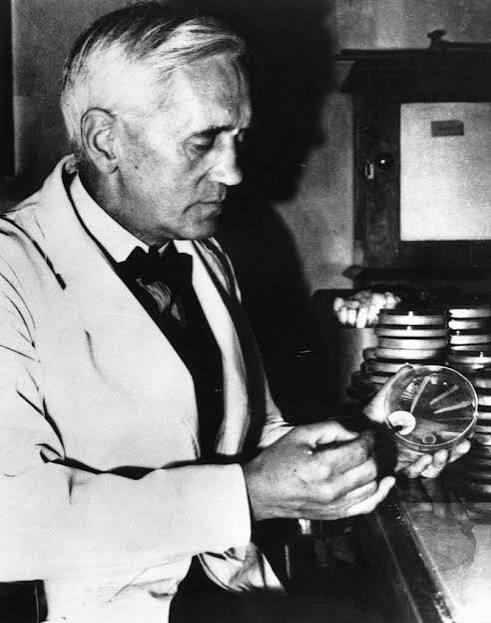
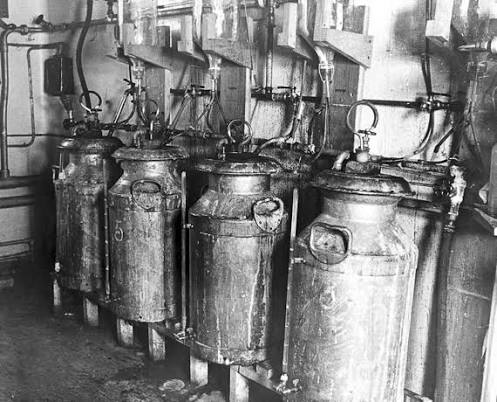
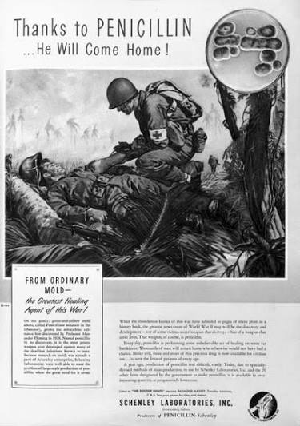

Back in World War 1 and older wars, getting a small cut was really bad. Dirt got into the cuts and made people sick, and doctors had no good way to stop it. A lot of times, more soldiers died from sick wounds than from getting shot.

Photo of doctors helping a hurt soldier in World War 2.
Everything got better in World War 2 because doctors made a new medicine called penicillin. It was made from mold, and it killed bad germs. It stopped small cuts from getting bad, and it saved over 100000 soldiers.
Finding the Mold
Penicillin started by accident in 1928 when a scientist named Alexander Fleming left a lab dish open in his London lab. A stray mold spore got inside and killed all the bacteria around it.
Fleming knew it was cool, but he could not make enough of it to help real people. Later in 1939, two other smart guys named Howard Florey and Ernst Chain figured out how to clean the mold up so humans could take it.

Photo of Alexander Fleming looking at his lab dishes.
In 1928 Fleming found the mold by accident.
In 1939 Florey and Chain made it work for people.
In 1941 scientists went to America to make a ton of it.
They needed to make a lot of it fast because soldiers were getting hurt in the war every day.
How They Made a Lot of It
Growing a tiny bit of mold in glass jars was way too slow. Scientists in America had to find ways to grow tons of mold fast so all the soldiers could get medicine.

Photo of big metal tanks used to brew lots of mold at the same time.
3 Main Steps They Used
They fed the mold leftover corn juice, and it grew way faster.
They stopped using small bottles and used giant 12000 gallon tanks with air bubbles inside.
A worker found a rotten cantaloupe at the store, and its mold was 200 times stronger.
Why It Matters
By D-Day in 1944, the Allies had millions of doses of penicillin ready for the troops. It helped hurt soldiers heal up fast so they could go home or keep fighting.

Photo of an old war poster about penicillin saving soldiers.
In World War 1 almost 18 percent of soldiers with lung sickness died, but in World War 2 penicillin brought that down to less than 1 percent.
Making penicillin in big factories opened the door for all the medicine we use at the doctor today when we get sick.
My Sources
Source 1: Penicillin Opening Era of Antibiotics, author National Chemical and Marlis, 1999. Link
Source 2: Penicillin Discovery and Antibiotics Auction, author Alexander Fleming, December 11 1945. Link
Source 3: Penicillin Wonder Drug of WW2, author US Department of Agriculture, 2001. Link
Source 4: Mass Production of Penicillin in World War 2, author The National WW2 Museum, 2021. Link